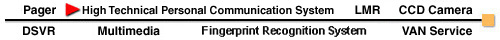
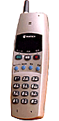
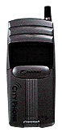
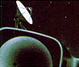
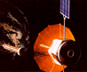

|  | EX-312 is compact in design Main features Demension - 44(W)б┐130(H)б┐23.5(D)зо Net weight - 105g (including battery) Rechargeable Rithium ion battery - Talk time 4 hours, standby 200 hours Clear and wide dot metrix LCD with graphic Can be used as a wireless phone, handphone or two-way radio by switching modes |
||||||||
|  | PCT-900
|
||||||||
|  | Pantech has invested in the development of CDMA technology since 1994
and has succeeded in developing chip set for LAN. On the basis of the advanced CDMA chip technology, Pantech is currently developing PCS terminals for the CDMA system, which is expected to be completed by the end of 1997. |
||||||||
|  | With its advanced PHS and CDMA technology, Pantech is spurring the development of the most advanced personal mobile telecommunication systems such as PDA, WLL and GSM | ||||||||

 |
 |
 |
 |
Copyright 1996 Pantech. All Rights Reserved.